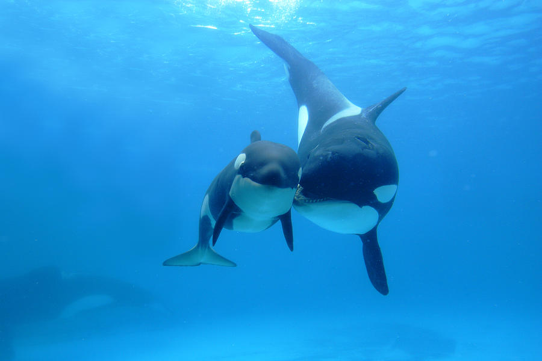

Características principales
Hábitat: Las orcas habitan en todos los océanos del mundo, desde aguas polares hasta tropicales.
Alimentación: Se alimentan de peces, focas, pingüinos, tiburones y otros mamíferos marinos.
Reproducción: Son mamíferos vivíparos. Las crías permanecen con su grupo familiar durante varios años.
Estado de conservación: Algunas poblaciones están amenazadas por la contaminación y la pesca excesiva.



| Característica | Información |
|---|---|
| Nombre científico | Orcinus orca |
| Tipo | Mamífero marino |
| Longitud | 6 a 8 metros |
| Peso | Hasta 6 toneladas |
| Esperanza de vida | 50 a 80 años |